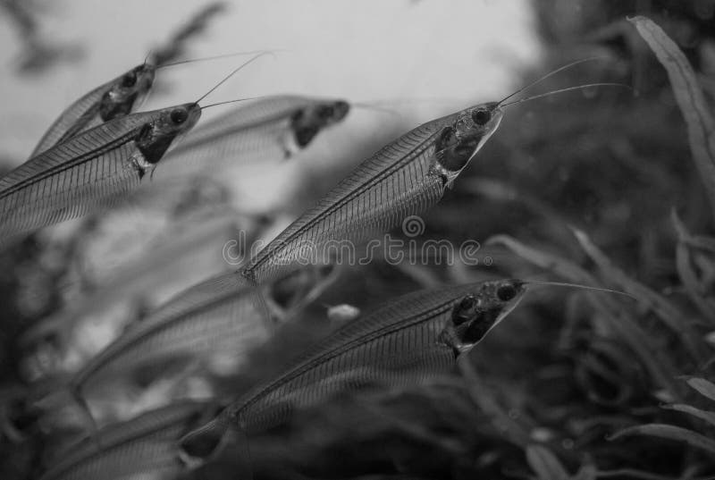

Anchovy
Published on March 17, 2024Anchovies are the comedians of the sea, always cracking jokes and making waves! Just kidding, they're actually small, common saltwater forage fish in the family Engraulidae that are used as human food and fish bait. There are 144 species in 17 genera found in the Atlantic, Indian, and Pacific Oceans. Anchovies are usually classified as an oily fish. They are small, green fish with blue reflections due to a silver-colored longitudinal stripe that runs from the base of the caudal fin. They range from 2 to 40 centimetres (1 to 15+1⁄2 inches) in adult length, and their body shapes are variable with more slender fish in northern populations.
| Name | Joke | Rating |
|---|---|---|
| Mr. Anchovy | Why did the anchovy go to school? To improve its "school" of thought! | 5/5 |
| Anchovy McFishface | What do you call an anchovy that can sing? A tuneful fish! | 4/5 |
| Anchovy the Great | Why did the anchovy bring a ladder to the party? Because it heard the drinks were on the house! | 3/5 |
| Grzesiek | The smelly smell it smells | 6/5 |
Here are some of the things I like about anchovies:
- They add a unique and savory flavor to dishes
- They are a good source of omega-3 fatty acids
- They are versatile and can be used in various recipes
- They are a traditional ingredient in Mediterranean cuisine
This is not anchovy:
Tell as a joke about anchovys
Progress of my anchovys book:
Progress: